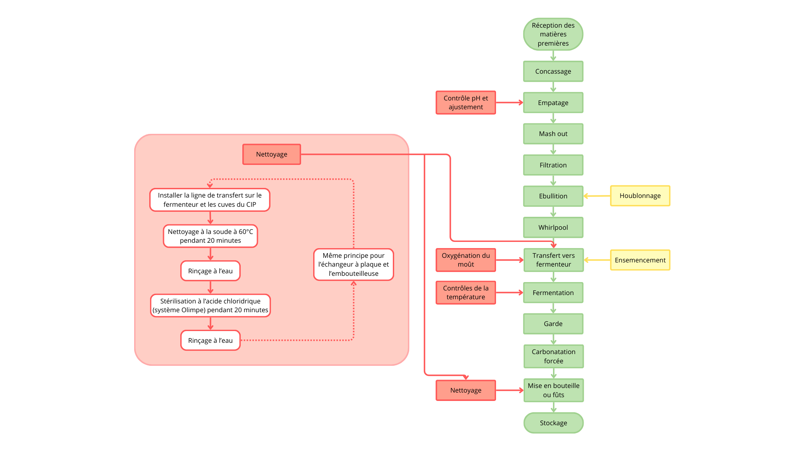

1. S’approprier les bonnes pratiques d’hygiène et de sécurité
Description :
Lors de mon alternance, j’ai appliqué des protocoles d’hygiène pour le nettoyage des fermenteurs et des lignes de conditionnement. J’ai assuré une désinfection efficace tout en optimisant l’usage des produits chimiques et de l’eau. Cette démarche a contribué à garantir une production de qualité tout en utilisant les moyens nécessaires à la sécurité des opérateurs. Pour cela j'ai reçu des instructions sur le port des EPI et sur le danger potentiel des produits utilisés. De plus, afin de réduire l'utilisation de produits chimiques, une installation permettant la désinfection par l’eau courante a été mise en place. Cette technologie produit de l'eau chlorée par électrolyse.
Analyse :
La maîtrise de ces pratiques a permis d’améliorer l’efficacité des cycles de production tout en minimisant les risques de contamination et en utilisant moins de produits nocifs pour l'environnement.
Perspectives :
Approfondir mes connaissances des normes HACCP et ISO pour renforcer mes compétences en gestion de la qualité, de la sécurité et de l'environnement.
2. Réaliser l’analyse fonctionnelle d’une ligne de production
Description :
Une des première chose que j'ai du faire quand je suis arrivée dans l'entreprise était d'étudier les étapes clés de la production de la bière artisanale, du brassage au conditionnement. Cette partie est indispensable pour comprendre ce que l'on fait et ne pas commettre d'erreurs. Ensuite j'ai pu identifier les points critiques lors de la production, comme la gestion des températures qui est un facteur important pour une fermentation optimale de la bière sans créer de faux gout et aussi avoir le bon degré d'alcool. Le pH est aussi determinant pour s'assurer de ne pas contaminer la bière car peu de bactéries résistent au pH acide de la bière.
Analyse :
Cette compréhension de la ligne de production et des points critiques qu'elle comporte m’a permis d’être plus efficace dans mon travail et totalement autonome.
Perspectives :
Pour la suite, il serait interessant de voir une ligne automatisée afin de pouvoir comparer les différences à plusieurs échelles.

3. Mettre en œuvre le contrôle de la production
Description :
En suivant le cahier des charges de chaque brassin que j'ai pu produire, j’ai effectué des contrôles réguliers sur la densité, la température, le pH et la carbonatation des bières. Ces vérifications permettent de garantir la conformité du produit avec les exigences de la brasserie mais aussi d'assurer aux consommateurs que le produit qu'ils recherchent est bien le meme à chauqe fois pour ainsi répondre à leurs exigences.
Analyse :
Ces contrôles ont permis d’éviter les écarts de qualité tout en instaurant une culture de rigueur au sein de l’entreprise. Cela à aussi permis quand je retournais en cours, que chaque controle fait était notifié sur la fiche de suivi du brassin ce qui permettaient a mes employeurs de prendre le relais en s'assurant que tel controle avait bien été fait.
Perspectives :
Étendre ces compétences, notamment par des cartes de controle mais aussi via des outils numériques.
4. Maîtriser la conduite d’appareils pilotes
Description :
J’ai pu utiliser des fermenteurs et d’autres équipements spécifiques au brassage artisanal, en respectant scrupuleusement les consignes de sécurité et les exigences de fabrications des produits. Par exemple, j’ai régulé la température de fermentation, de garde, etc mais aussi l’oxygénation pour optimiser la fermentation.
Analyse :
Ces manipulations m’ont permis de mieux comprendre l’impact des paramètres sur la qualité du produit final.
Perspectives :
J'aimerai apprendre à piloter des outils et des appareils automatiques afin d'être plus polyvalente et aussi pour améliorer la gestion des processus en temps réel.
5. Valider les essais par des techniques appropriées
Description :
J’ai réalisé des tests sensoriels sur une nouvelle recette de bière pour analyser l’équilibre aromatique et l'appreciation des consommateurs. Ces tests ont été mon sujet pour la fin de ma première année d'alternance et j'ai pu communiquer les résultats sous forme d'un rapport et d'un oral.
Analyse :
Ces essais ont aidé à ajuster la recette future et à garantir un produit cohérent avec les attentes fixées.
Perspectives :
Cette expérience à été vraiment très enrichissante et j'ai beaucoup aimé mener ces tests. J'aimerai beaucoup m'améliorer dans l'utilisation d’outils statistiques pour des projets de plus grande échelle.